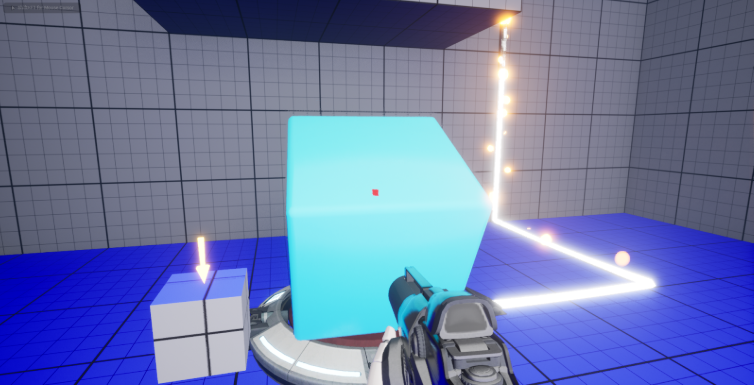

Gravity

Gravity is a first-person puzzle game set in a futuristic world. Equipped with gravitational technology, players must solve puzzles to navigate through various rooms, ultimately uncovering the mystery behind their presence in this strange environment.
Here is the GitHub page
Game Presentation
My Duties:
- Gravity System (for all the world and the player) on Unreal Engine
- User Interface (designer & developer) and User Expererience
- Created a save system for level and level editor
- Created an online share timer system (time to finish level)
- Use Steam Advanced Session Plugin for data share timer
- 3C : Character, Camera and Controller
- VFX : Shooting, Level Color change with world gravity, particles,...
- Intercable : Cube, Buttons, Press vertical buttons, weapons
- Created a Shareable Level Editor
Unreal Engine
Blueprints/C++